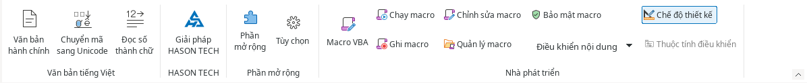
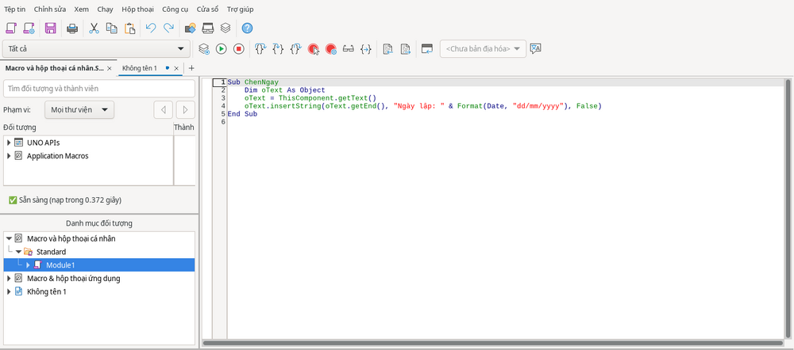
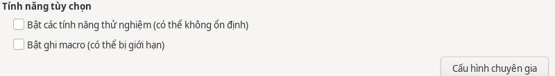
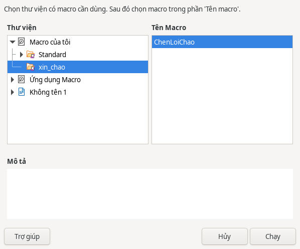
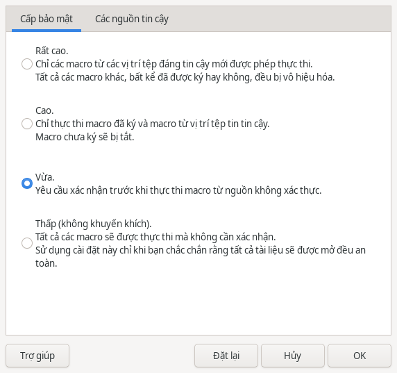

Khác
Dành cho nhà phát triển
HST Office chạy được macro Basic và Python, mã VBA thông dụng, và có thể được điều khiển tự động từ chương trình khác qua UNO hoặc chạy nền để chuyển đổi hàng loạt.
Lệnh trên thanh công cụ
Các lệnh cho nhà phát triển nằm ở thẻ , nhóm : , , , , , và các lệnh điều khiển biểu mẫu. Trong HST Sheets, nhóm này có thể hiện thành nút .

Macro Basic
- mở trình soạn Basic. Macro dùng chung cho mọi tài liệu nằm ở ; macro chỉ thuộc một tài liệu nằm dưới tên tài liệu đó.
- Khung bên trái trình soạn có mục để tra cứu các dịch vụ, giao diện và hằng số của API.
- Chạy macro: → chọn thư viện, mô-đun ở cột → chọn macro ở cột → .
Sub ChenNgay
Dim oText As Object
oText = ThisComponent.getText()
oText.insertString(oText.getEnd(), "Ngày lập: " & Format(Date, "dd/mm/yyyy"), False)
End Sub
Ghi macro
- Bật một lần: , chọn , bấm . Nút xuất hiện trong nhóm .
- Bấm , thao tác trên tài liệu, rồi bấm trên thanh nhỏ vừa hiện.
- Gõ tên macro, chọn mô-đun (ví dụ ) và bấm .

Macro ghi được gọi các lệnh giao diện qua DispatchHelper. Không phải thao tác nào cũng ghi được; khi cần, sửa lại mã trong trình soạn.
Macro Python
Đặt tệp .py vào thư mục Scripts/python trong hồ sơ người dùng HST Office (thư mục user của hồ sơ). Mỗi hàm được liệt kê trong g_exportedScripts hiện trong . HST Office có sẵn trình thông dịch Python, không cần cài thêm.
# Scripts/python/xin_chao.py
def ChenLoiChao(*args):
doc = XSCRIPTCONTEXT.getDocument()
text = doc.getText()
text.insertString(text.getEnd(), "Xin chào từ macro Python.", False)
g_exportedScripts = (ChenLoiChao,)
ChenLoiChao.Mã VBA
HST Sheets và HST Writer chạy được phần lớn mã VBA thông dụng; một số đối tượng còn hạn chế. Xem Macro VBA để biết cách mở trình soạn, bảng tương thích và cách lưu tệp giữ macro.
Bảo mật macro
Mức bảo mật đặt ở . Mặc định là : hỏi trước khi chạy macro từ nguồn chưa tin cậy. Thẻ dùng để thêm thư mục hoặc chứng thư tin cậy.

Chạy nền: chuyển đổi tệp hàng loạt
Lệnh soffice nằm trong thư mục program của thư mục cài đặt HST Office. Trên Linux có thể gọi bằng lệnh hst-office.
hst-office --headless --convert-to pdf --outdir ./pdf bao-cao.docx
hst-office --headless --convert-to odt *.docxKhi HST Office đang mở trên máy, thêm tham số -env:UserInstallation= trỏ tới một thư mục hồ sơ riêng (viết dạng URL bắt đầu bằng file:) để lệnh chạy nền không lẫn với cửa sổ đang mở.
Điều khiển tự động qua UNO
- Khởi động HST Office ở chế độ lắng nghe:
hst-office --headless --accept="socket,host=127.0.0.1,port=2002;urp;" - Chạy chương trình Python bằng trình thông dịch đi kèm (
program/pythontrong thư mục cài đặt) để có sẵn mô-đununo:import uno from com.sun.star.beans import PropertyValue local = uno.getComponentContext() resolver = local.ServiceManager.createInstanceWithContext( "com.sun.star.bridge.UnoUrlResolver", local) ctx = resolver.resolve( "uno:socket,host=127.0.0.1,port=2002;urp;StarOffice.ComponentContext") desktop = ctx.ServiceManager.createInstanceWithContext( "com.sun.star.frame.Desktop", ctx) hidden = PropertyValue() hidden.Name, hidden.Value = "Hidden", True doc = desktop.loadComponentFromURL("private:factory/swriter", "_blank", 0, (hidden,)) doc.Text.setString("Văn bản tạo tự động qua UNO.") pdf = PropertyValue() pdf.Name, pdf.Value = "FilterName", "writer_pdf_Export" doc.storeToURL(uno.systemPathToFileUrl("/tmp/tu-dong.pdf"), (pdf,)) doc.close(True) desktop.terminate()
host=127.0.0.1. Cổng UNO không có mật khẩu; mở cho máy khác là cho phép người khác điều khiển HST Office trên máy bạn.Tài liệu API
HST Office dùng API UNO của lõi bộ văn phòng mã nguồn mở phiên bản 26.8. Trong máy, tra cứu nhanh ở mục của trình soạn Basic. Tài liệu tham khảo đầy đủ (SDK, IDL) của phiên bản lõi 26.8 dùng được cho HST Office; các dịch vụ riêng của HST không thuộc API công khai.